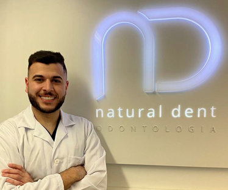
Virrey Olaguer y Feliú 2462, 8° B · Belgrano, CABA
Odontología integral & estética dental
Tu sonrisa,en equilibrio.
Cuidamos tu salud bucal con un enfoque personalizado, combinando ciencia, experiencia y estética natural. Especialistas en diseño de sonrisa, implantes y ortodoncia en Buenos Aires.
- Resultados naturales y armónicos
- Tecnología digital y biointegración
- Equipo multidisciplinario permanente
Tratamientos especializados
Soluciones para
tu sonrisa
Procedimientos odontológicos avanzados diseñados para devolver funcionalidad, estética y salud biológica a tu boca con total precisión.
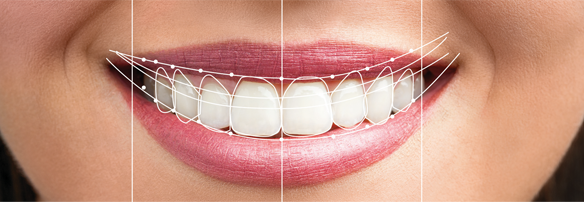
Estética
Diseño de sonrisa
Armonía, proporción y naturalidad para tu rostro.
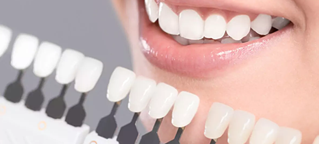
Estética
Carillas Cerámicas
Perfección estética con preservación del esmalte.
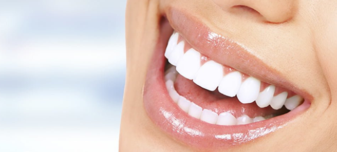
Estética
Blanqueamiento
Máxima luminosidad y blancura sin sensibilidad.
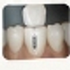
Rehabilitación
Implantes Dentales
Soluciones permanentes para recuperar piezas perdidas.
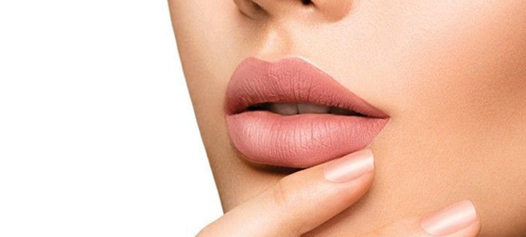
Rehabilitación
Rehabilitación Oral
Funcionalidad masticatoria y estética integral.
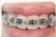
Ortodoncia
Alineadores Invisibles
Alineación precisa y discreta sin brackets.
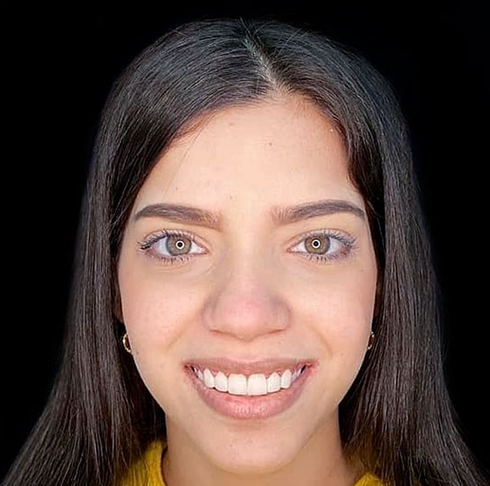
Ortodoncia
Ortodoncia Estética
Corrección integral con brackets transparentes.
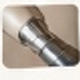
Salud Bucal
Periodoncia & Encías
Cuidado de encías y prevención biológica integral.
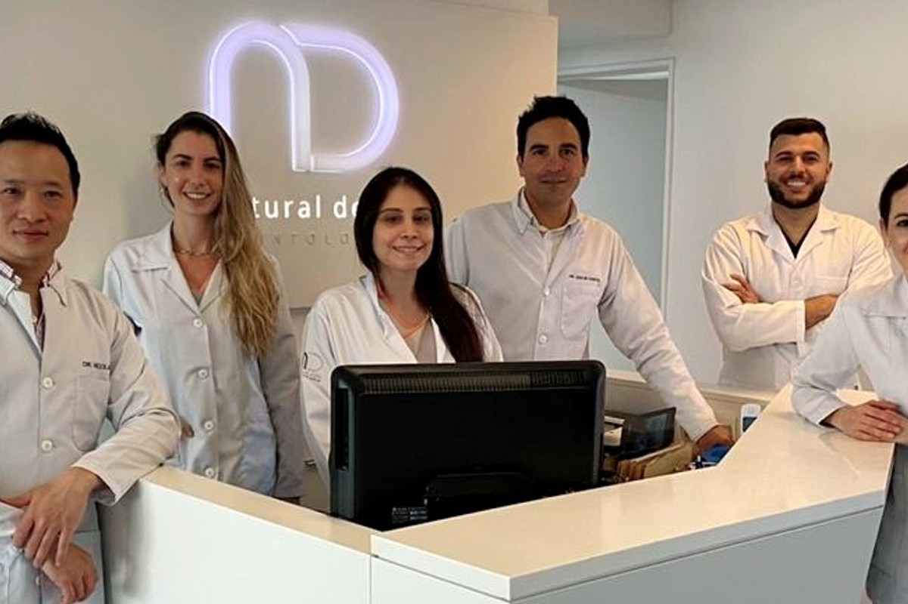
Dr. Barrios & Dra. Delgado
Dirección Médica & Especialistas Clínicos
Conectamos emociones
a través de la sonrisa
Nuestra filosofía clínica
¿Por qué
Natural Dent?
Combinamos la excelencia de la odontología moderna con un trato cercano, humano y personalizado. Diseñamos planes a medida utilizando tecnología digital para que disfrutes de una sonrisa sana, armónica y para toda la vida.
- +3.500 pacientes atendidos Sonrisas transformadas
- 12+ años de trayectoria Especialización y docencia
- 100% atención personalizada Planes diseñados a tu medida
Enfoque clínico riguroso
Del diagnóstico
al resultado
Un proceso transparente, guiado y predecible en cada etapa, garantizando procedimientos seguros, indoloros y con expectativas claras.
Agendar tu evaluación-
01
Evaluación
Diagnóstico clínico integral, radiografías y relevamiento fotográfico de tu sonrisa.
-
02
Planificación
Diseño digital a tu medida, explicando cada fase, materiales y presupuesto sin sorpresas.
-
03
Tratamiento
Procedimientos de alta precisión con anestesia indolora y tecnología de última generación.
-
04
Seguimiento
Controles periódicos, pulido y mantenimiento preventivo para garantizar resultados duraderos.
Evidencia clínica real
Resultados reales
Deslizá sobre cada fotografía para interactuar con el antes y después de casos reales tratados en nuestro consultorio en Belgrano.
Mové el cursor o deslizá con tu dedo para comparar
Ver más en Instagram
AntesDespués
Diseño de Sonrisa
AntesDespués
Implantes Dentales
AntesDespués
Ortodoncia Estética
AntesDespués
Cierre de Diastemas
Profesionales de la salud
Nuestro equipo
Tu confianza y salud bucal en manos de especialistas universitarios comprometidos con la excelencia asistencial.
Conocer trayectoria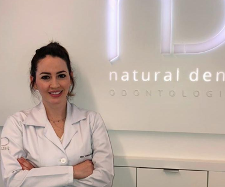
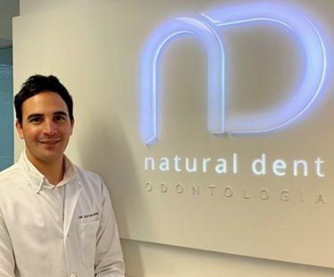
Ubicación y confort
Un espacio pensado
para tu bienestar
Instalaciones modernas, equipamiento digital y un ambiente cálido para que tu visita sea una experiencia relajada y confortable.
📍
Virrey Olaguer y Feliú 2462, 8° B
Belgrano, CABA · A metros de Av. Cabildo
🔬
Tecnología Digital & Esterilización
Protocolos certificados de bioseguridad y confort
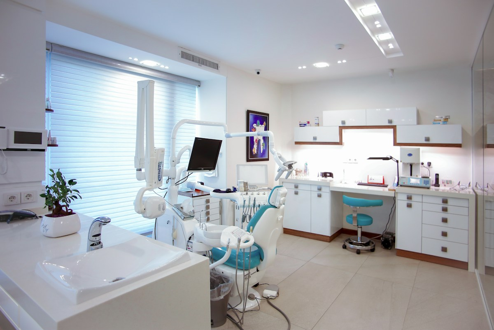
Belgrano · CABAExperiencias de pacientes
Lo que dicen nuestros pacientes
★★★★★“La atención fue excelente, me explicaron todo con mucha claridad y me sentí muy cómoda en todo momento. El resultado superó mis expectativas.”
★★★★★“Un equipo muy profesional y cálido. Me dieron mucha confianza desde la primera consulta para colocarme los implantes. Sin dolor y todo impecable.”
★★★★★“Superaron mis expectativas. El resultado es súper natural y la experiencia con la ortodoncia invisible fue muy positiva de principio a fin.”
Preguntas frecuentes
Resolvemos tus dudas
¿Cómo es la primera consulta?
En tu primera visita realizamos una valoración clínica y diagnóstica completa, evaluamos tus necesidades y diseñamos un plan de tratamiento personalizado adaptado a tus objetivos de salud y estética dental.
¿Los procedimientos causan dolor?
No. Trabajamos con técnicas mínimamente invasivas y anestésicos modernos de alta eficacia para asegurar una experiencia completamente confortable y libre de molestias.
¿Cuánto duran las carillas y los implantes?
Con una adecuada higiene bucal y controles periódicos, las carillas cerámicas y los implantes oseointegrados tienen una durabilidad extraordinaria que se extiende por décadas o toda la vida.
¿Dónde está ubicada la clínica y cómo reservo un turno?
Estamos en Virrey Olaguer y Feliú 2462, 8° B (Belgrano, CABA). Podés solicitar tu turno directamente por WhatsApp haciendo clic en los botones de esta página o llamando al (011) 4783-0678.

Tu sonrisa y bienestar en manos de especialistas
Agendá tu consulta hoy
Estamos para asesorarte, despejar tus dudas y diseñar el plan ideal para tu sonrisa.
Tu sonrisa
en buenas manos